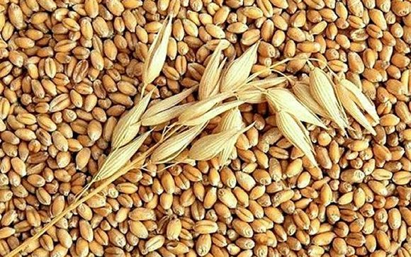
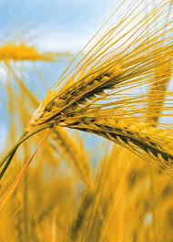

Caracteristica del Departamento de Oruro
Agricultura de oruro
En las extensas planicies altiplánicas, la agricultura se halla limitada por la falta de riego, la fuerte salinidad de sus suelos y la presencia de frecuentes heladas en los meses más fríos del año. En tales condiciones, sólo es posible la realización de unos pocos cultivos (papa, quinua, cañahua, cebada, trigo, oca y algunas hortalizas).
Produce.-
El departamento de Oruro produce papa, quinua, oca, haba, cebada y algunas verduras
Ganaderia de oruro
Qué es "Ganaderia".-Se denomina como ganadería a la actividad económica que consiste en la cría de animales domésticos para el consumo humano y la obtención de carne, leche, lana, pieles, miel entre otros.
Asimismo, el término ganadero es un adjetivo que indica a lapersona que es dueña del ganado o que cuida de éste.
Cria de:.-
Es importante la cría de ganado ovino, también la cría de camélidos: llamas, alpacas; en condiciones óptimas, asimismo de ganado bovino, equino y porcino.
| Actividades Productivas | |||||||||
|---|---|---|---|---|---|---|---|---|---|
| Agricultura de Oruro | Ganaderia de Oruro | ||||||||
| Papa | Haba | Quinua |  | Camelidos | Bovino | ||||
| Oca |  | Cebada |  | Trigo | Caballo | Cerdo | |||